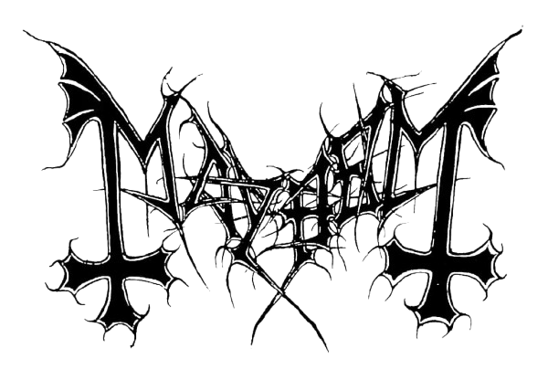

← Back to the list
Rüfüs
An alternative dance group from Sydney, Australia, that consists of Tyrone Lindqvist, Jon George and James Hunt. Their debut album Atlas peaked at number 1 in Australia.
Indie Dance
House

0:00
0:00